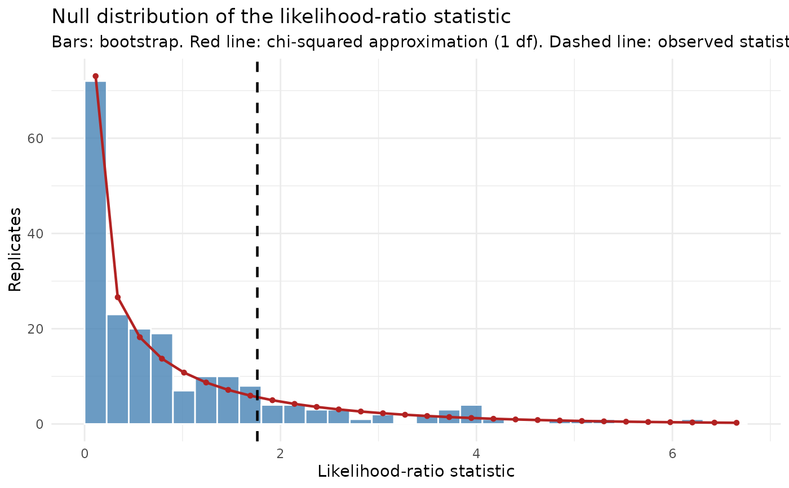

Plot the bootstrap null distribution of a likelihood-ratio statistic
Source:R/pb_plot_lrt.R
pb_plot_lrt.RdDraws a histogram of the bootstrap statistics from pb_lrt() and overlays
the counts expected under the chi-squared approximation, with the observed
statistic marked by a vertical line. Where the bars and the line disagree,
the asymptotic p-value cannot be trusted; the bootstrap p-value is the
share of the bars at or beyond the vertical line.
Arguments
- test
A
pb_lrtobject frompb_lrt().- bins
Number of histogram bins.
Examples
budworm <- data.frame(
sex = rep(c("M", "F"), each = 6),
dose = rep(c(1, 2, 4, 8, 16, 32), times = 2),
dead = c(1, 4, 9, 13, 18, 20, 0, 2, 6, 10, 12, 16),
n = 20
)
common <- glm(cbind(dead, n - dead) ~ sex + log2(dose), data = budworm, family = binomial())
separate <- update(common, . ~ sex * log2(dose))
test <- pb_lrt(common, separate, n = 200, seed = 1)
pb_plot_lrt(test)
